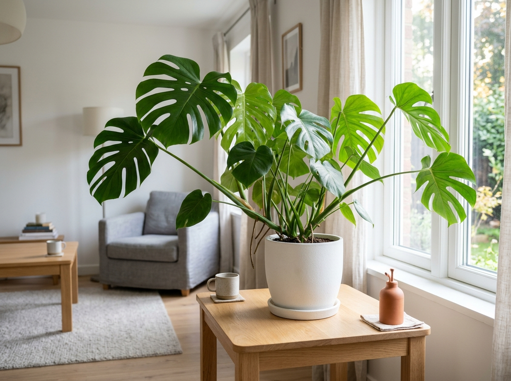

مراجعة النبتة
راجعي البيانات واحتياجات العناية المقترحة، ثم اعتمدي إضافة مونستيرا إلى نباتاتك.

مونستيرا
غرفة المعيشة — قرب النافذةعند الاعتماد، يُنشأ ملف خاص يضم بيانات نبتتك واحتياجات رعايتها.
اكتمل التحليل
احتياجات العناية المقترحة
اقتراحات من التحليل الآلي، وليست تأكيداً للنوع. راجعيها وفق بيئة نبتتك؛ قد يخطئ الذكاء الاصطناعي.
الري حسب حالة التربة
افحصي جفاف التربة قبل الري، واتركي الماء الزائد يتصرّف.
ضوء ساطع غير مباشر
قرب النافذة مناسب مع ضوء مرشّح؛ تجنّبي الشمس المباشرة.
التسميد خلال النمو النشط
اتبعي إرشادات السماد المناسب وراقبي استجابة النبتة.
تذكيرات الري والتسميد تلقائياً
تُضبط عند الإضافة وفق ملف العناية الخاص بنبتتك.
راجعيها قبل الاعتماد النهائي
لا يمكن تعديل النبتة بعد اعتمادها وإضافتها. لطلب أي تغيير، اختاري «طلب تعديل» الآن.